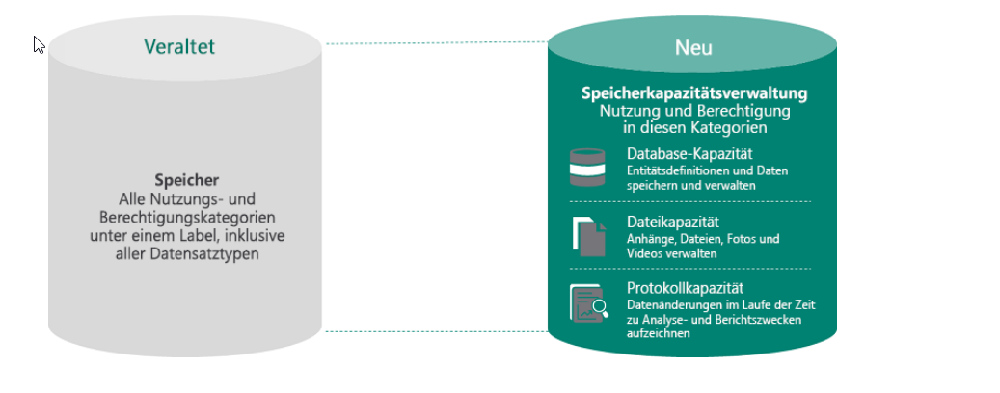

Speicherverwaltung in Microsoft Dataverse
Seit April 2019 bietet Microsoft Dataverse ein optimiertes Speicherverwaltungssystem für unterschiedliche Datentypen.
Diese Funktion ist speziell für die Bedürfnisse von Power Apps, Power Automate und Dynamics 365-Apps entwickelt worden.

1. Speicherarten
Microsoft Dataverse verwaltet Speicher in drei Kategorien:
- Relationale Daten (Datenbank):
- Für strukturierte, relationale Daten, die in Dataverse gespeichert sind.
- Anhänge (Datei):
- Speicherplatz für Dateien, die mit Datensätzen verbunden sind, wie z. B. Dokumente oder Bilder.
- Überwachungsprotokolle (Protokoll):
- Speichert Protokolle für Überwachungs- und Änderungsverlauf.
2. Speicherberechtigungen- Standardberechtigungen:
- Neukunden erhalten für jeden Speichertyp eine mandantenweite Standardberechtigung.
- Zusätzlicher Speicherplatz:
- Abonnementlizenzen pro Benutzer erhöhen den verfügbaren Speicherplatz.
- Zusätzlicher Speicher kann in Schritten von 1 GB erworben werden.
3. Auswirkungen auf bestehende Kunden- Bestandskunden:
- Die Änderungen betreffen bestehende Kunden erst nach Ablauf ihres aktuellen Abonnementzeitraums.
- Nach der Verlängerung wird das neue Speicherverwaltungssystem angewendet.
Zusammenfassung der Vorteile- Flexibilität: Skalierbarer Speicherplatz basierend auf den Anforderungen der Organisation.
- Optimierung: Klar definierte Speicherarten für unterschiedliche Datentypen.
- Mandantenweite Standardberechtigung: Garantiert grundlegenden Speicherplatz ohne Zusatzkosten.
- Erweiterungsmöglichkeit: Zusätzlicher Speicherplatz kann einfach erworben werden.
Für detaillierte Informationen zur Speichererweiterung und Berechnung von Speicherbedarf konsultieren Sie die Microsoft Dokumentation zu Dataverse-Speicher.
Zwei Versionen der Speicherberichterstellung
Microsoft Dataverse bietet zwei Modelle zur Verwaltung und Berichterstellung der Speicherkapazität, die sich durch das zugrunde liegende Lizenzmodell unterscheiden:
- Dieses Modell richtet sich an Organisationen, die das ältere Lizenzmodell für den Speicher verwenden.
- Benutzer mit diesen Lizenzen erhalten eine einheitliche Berechtigungskapazität.
- Weitere Details finden Sie unter: Vorgängerkapazitätsspeicher.
- Dieses Modell wurde für Organisationen mit dem neuen Lizenzmodell eingeführt.
- Benutzer erhalten Kapazitätsberechtigungen und die Nutzung wird in drei Kategorien aufgeteilt:
- Datenbankspeicher
- Dateispeicher
- Protokollspeicher
- Vorteile:
- Skalierbarkeit
- Reduzierter Bedarf, Speicherplatz freizugeben
- Weitere Informationen finden Sie unter: Dataverse-Speicherkapazität.
Diese Modelle unterstützen Organisationen dabei, ihre Speichernutzung effektiv zu verwalten und an ihre individuellen Anforderungen anzupassen.